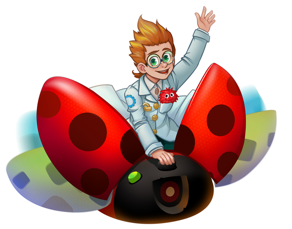

Почему мороженое холодное? Как остывает чай? Зачем врачи меряют температуру? Не знаете, как ответить ребенку на все эти вопросы? Наша лаборатория в игровой форме поможет разъяснить сложные физические и природные явления.